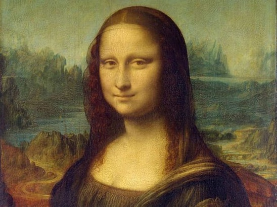

지난 글 에서는 ‘아름다움’이 무엇인지에 대해 나누어 보았습니다. 이번 글에서는 왜 현대 미술은 이해하기 어려운지 알아보도록 하겠습니다.
현대미술을 이해하기 위해서는 먼저 미술의 역사를 아는 것이 필요합니다. 과거에 그림은 주로 개인의 초상과 종교적인 목적을 위해 그려졌습니다. 예를 들면 예수님과 성경 이야기 등이며 이는 신앙과 교리 전달을 돕기 위한 수단이었습니다.
(원문에는 이 자리에 사진이 있었습니다)
▲ 미켈란젤로가 1508년부터 4년에 걸쳐 완성한 시스티나 소성당 천장화 <천지창조>. 천장 밑에 세운 작업대에 앉아 고개를 뒤로 젖힌 채 천장에 물감을 칠해나가는 고된 작업으로 목과 눈에 이상이 생겼지만, 그는 모든 어려움을 극복하며 대작을 남겼다.
하지만 이것은 하나님을 왜곡(십계명 2번째)하는 것이 될 수 있기 때문에 조심스럽게 다가갈 필요가 있습니다. 그 시절 글을 모르는 사람을 위해서 성경을 알리려는 순수한 마음으로 그린 그림이었다면 하나님께서 봐주시지 않으실까 생각해봅니다.
(현재 어린이 성경같이 하나님 말씀을 교육하기 위한 교육자료로 사용하는 것과 같이 사용 됐을 것 입니다. 괜찮은지는 천국에서 물어봐야 할 듯합니다.)
14세기부터 17세기까지의 르네상스(프랑스어: Renaissance) 시대에는 인간 중심주의와 개념적 발전이 강조되며 미술의 가치가 높아졌습니다. 여기에서 화가들은 자연주의적인 관찰과 더불어서, 조명법 및 해부학적 지식을 바탕으로 현실적인 그림을 그려내어 미술의 역할이 사회적으로도 더 크게 인정받게 되었습니다.

‘스푸마토(Sfumato)’라는 기법으로, ‘연기처럼 사라지다’ 라는 기법의 이름. 선으로 정의 하지 않고, 입술의 경계처럼 부드럽계 경계를 만드는 방법 ‘대기 원근법’ 배경에 사용된 방법으로 광활한 풍경이 가까울수록 붉은색으로 멀수록 푸른색을 띤다. 공기중의 산란에 의한 자연현상을 포착하여 그려냈다.
르네상스는 불어로 보면 ‘다시 태어나다 ‘라고 말할 수 있습니다. 이것은 스스로를 ‘인본주의’ 인 것을 말하고 있는 것으로 봐야 합니다. 르네상스 이후 새로운 철학적 관점 및 새로운 관찰법이 ‘사회가치적’으로 인정받기 시작했는데. 이 말은 즉 돈이 된다는 뜻 입니다. 우리가 현재 어렵게 보는 현대미술의 초상이 여기서부터 비롯된 것이라 볼 수 있습니다.
근대와 현대에 들어와 19세기의 미술은 다양한 ‘인본주의’ 예술운동들의 등장으로 인해 격변해갔습니다. 근대 미술은 전통적인 형식을 탈피하고 개인의 ‘ 시각’과 ‘감정’을 표현하는데 중점을 두었고, 이는 미술의 가치와 개념을 바꾸어 놓았습니다.
이러한 새로운 개념과 방법은 돈이 되었습니다. 결국 난해한 방법, 특이한 표현방법, 이질적인 방식, 새로운 개념 미술은 가치를 표현하는 하나의 지표가 되었습니다. 이것이 바로 ‘현대미술을 이해하기 어려운 이유’ 입니다. 인간이 어떠한 방법으로 인식하는 ‘것’ 또는 새로운 개념을 종이(캔버스)에 담아 낸다는 ‘것’ 이것이 미술의 금액적 가치를 높이게 되었습니다. 또한, 미술 역사의 배경을 알고 있는 일부의 사람들과, 작품을 수집하고 투자하는 사람들로 인하여 미술은 편향적이게 바뀌어 가게 됩니다.
시간이 지나면서 추상미술, 포퓰리즘 아트, 개념미술, 설치 미술 등이 등장하여 예술의 경계를 확장하고 실험적인 작품들이 주목 받기 시작했습니다. 예를 들어 ‘잭슨 폴록’은 캔버스의 물리적인 ‘힘’을 담아 냈다라는 이유로 그의 작품은 경매에서 높은 금액으로 팔렸습니다.
그렇기 때문에 많은 사람들은
‘여전히 현대 미술이 무엇인지 모르겠다.’
‘무엇을 표현한지 모르겠다.’
라고 이야기합니다.
지금 현재의 미술품의 가치는 앞서 말한 현대미술의 근간을 두고 ‘미술품 자체’에 두기 보다는, 미술 작가의 개인 생애와 미술작가가 그림을 위해 걸어왔던 시간에 가치를 둡니다. 그래서 작품자체의 의미보다, 그 배경을 알아야 하는 것이 미술을 이해하기 위해 필요합니다.
결국 이러한 배경을 알지 못하고 미술품을 바라본다면 이해할 수 없고, 무엇을 이야기 하는지 알 수 없습니다. 우리는 그리스도인으로서 미술의 가치를 어떻다 논할 필요가 없습니다. 미술이라는 기법도 하나님께서 주신 아름다움 일부 입니다. 그저 미술이라는 것을 통해 하나님을 경배하는 새로운 눈이 열림에 감사하는 마음이면 족할 뿐입니다.
그렇기 때문에 그리스도인들은 사람들이 붙이는 미술적 가치에 눈을 두기 보다, 그 작품이 하나님께서 원하시는 것인지 아니면 작가 자신을 위한 것인지를 분별해내는 지혜가 필요합니다. 때로는 잘못된 미술이 그리스도인에게 독이 될 수 있기 때문입니다.
글 르듀죵